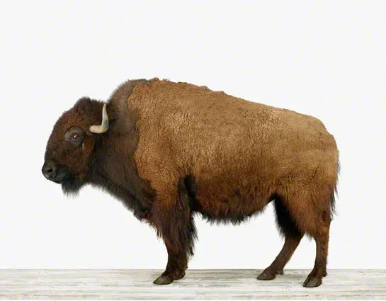

Op-Ed
We Need a New Party
If the Republicans and Democrats were waiters, we’d send our food back for lousy service.

From Katrina to the Gulf Oil Spill, from Iraq to Afghanistan, from savings and loan failures to the sub prime mortgage collapse, we live with failures, repetitive, devastatingly costly failures.
If the Republicans and Democrats were waiters, we’d send our food back for lousy service; instead we swallow hard because it’s all we’ve got — and let them dictate the amount of our tip!
Our core political institutions have failed us. They have failed repeatedly, for many years, and they are failing us now. We need a genuine new political party. Not a counter to the Tea Party, which is essentially a lightning rod of dissatisfaction. No, we need a party that believes in government as a key component of an orderly, safe, functioning society, and is willing to engage to make that government as good as it can be.
We cannot allow the enormous discrepancy between rich and poor to continue to grow. On the other, we must demand that government be ruthlessly more efficient in performing its basic functions. Without a synthesis incorporating these great elements, we are moving inexorably toward societal failure.
We need a new party because the current parties play to what separates us, and encourage us to define our interests narrowly. Faced with ideologies without heart or mind, the country is in danger of losing its soul. We need a new party to generate realistic solutions and recapture a sense of national identity and pride.
We wouldn’t need a new party if the existing ones had bothered to keep faith with their own purported ideologies. The two major parties have become too constrained by outdated approaches and self-serving practitioners to be of any use to the country any longer.
We need the Buffalo Party.
Why the Buffalo?
The buffalo is a uniquely American icon, in the flesh and as a symbol. When Indians killed a buffalo, they used every bit of it, eating the meat, working the hides for clothes, down to using the cartilage for bowstrings. Nothing went to waste, every part served a purpose. The buffalo stands for what we need a new party to stand for:
Strength – the buffalo represents authority legitimately obtained, stemming from inherent strength and character, not power gained at someone else’s expense or exercised arbitrarily
Limits – the buffalo became nearly extinct because of the stupidity and shortsightedness of early settlers. It represents the tragic potential consequences of human activity
Hope – the possibility of redemption from folly through effective policy intervention, which saved the buffalo from final extinction.
Conservation of Resources – making the most of a scarce resource, reducing waste, accepting and adapting to the resource limits
Fiscal Sanity – the buffalo was the back of a nickel when the nickel was worth something
AMERICA – a powerful, home grown symbol of a mighty nation
The Buffalo Party’s philosophy would be humanitarian pragmatism. It would be rooted in the success or failure of policies in achieving their goals, rather than whether they fit into ideological guidelines.
The Buffalo Party’s Platform (for starters):
We’re not opposed to the wealthy being wealthy; we’re opposed to the poor being poor. We seek tax, education and resource use policies that support that aim.
We don’t favor the rule of despots, terrorists or religious fanatics, but we do favor the rule of law. To abandon adherence to that rule is to invite degenerating into a tyranny that oppresses spirit and individual rights in the name of an abstract state that exists only to keep itself in existence, and those that rule it in power. Under those circumstances, we will cease to be a beacon to the world and instead become the intrusive glare of a policeman’s flashlight.
We are not opposed to businesses making profits, but are opposed to those profits earned at the expense of other important values. They cannot be gained by the easy paths of ignoring the environment, of ignoring the sanctity of individual investment, or ignoring the precepts of simple honesty.
We do not believe Americans should do with less material goods, but rather believe that they can be created with the use of less non-renewable resources.
We are concerned not because we are uncomfortable, but because we are too comfortable. The history of once great nations is testament to the cycle of rise and fall that appears inevitable. Think of the things we thought we would never see again that have occurred in the past decade – serious economic collapse, a global division among nations that threatens massive war, large scale slaughters around the world.
Until our foreign policy consistently substitutes a diet of food for a diet of hate, we will not win these battles over the long term.
Obvious, repeated failures should lead to change. That they haven’t is a testament to the political parties having achieved monopoly status by scaring us, that if we don’t buy their product, we waste the value of our vote.
Establishing instant run-offs in all elections would break that monopoly. In instant run-offs, voters rank candidates in order of preference. If no candidate receives a majority of first choices, the candidate with the fewest number of votes is eliminated, and ballots cast for that candidate are redistributed to the surviving candidates according to the voters’ preferences. This process is repeated until one candidate obtains a majority. Instant run-offs would galvanize expression in the political arena. It supports the potential openness of democracy, not the stifling quality of our current system.
The Buffalo party represents hope for our future rooted in the true strengths of our history. It would be guided not by the polarizing, self-serving actions of both our current parties, but rather by a clear-headed approach to problems unfettered by past obligations and constraints. Imagine the party convention, where from Bloomberg to Schwarzenegger there could be an open discussion of solving problems without fear of offending narrow constituencies.
There is nothing in the Constitution which demands we should have only two parties. There is everything in it to suggest the Founding Fathers would abhor the current hollow reverence for their words that abuses their spirit. With luck, competition would force changes in the existing parties, who like most beasts respond best when threatened.
We need to reduce the insolence of office, and bring instead a quality of service oriented to those served, not those doing the serving.
The Buffalo Party: it’s time to enroll. Want to learn or do more? Let me know.